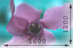
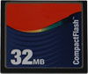

Forside
Introduktion
Valg af
Anvendelse
Motiver
Digitalbilleder
Digital fotografering adskiller sig fra traditionel film på en række områder. Hvor normale kameraer eksponerer det tagne billede på en lysfølsom film, som derefter kan fremkaldes i f.eks. et mørkekammer, bliver billeder taget med et digitalkamera, gemt som elektronisk data på et såkaldt hukommelseskort.
Digitale billeder har fordelen fremfor normal film, at man kan slette dem med det samme, hvis de ikke er blevet gode, og dermed bruge pladsen på hukommelseskortet igen til at tage et bedre billede. Man kan samtidig fremvise billederne på sit fjernsyn, eller overføre dem til computeren og ændre dem i et billedbehandlingsprogram (fjerne røde øjne etc.).
Digitale billeder har dog den ulempe, at de skal være af meget høj kvalitet for at se pæne ud hvis man printer dem ud. Her betyder kvaliteten af digitalkameraet selvfølgelig en del, men det er også vigtigt at vide hvordan man skal indstille de mange forskellige funktioner i kameraet korrekt. I et digitalkamera er det nemlig mere end de normale zoom og fokusfunktioner man skal holde styr på. Der er også forskellige måde man kan gemme sit digitale billede på, og her spiller indstillingerne for opløsning og kvalitet den største rolle.
Fotografiets opløsning
En af de mest grundlæggende forskelle på normale og digitale billeder, er hvordan man måler størrelsen af billedet. Hvor man på et normalt kamera måler størrelsen af billedet i centimeter, arbejder digitalkameraer med størrelsen pixels. Termen pixels stammer fra computeren og betyder ét punkt i et skærmbillede. Hvert af disse punkter indeholder en farve. Jo flere pixels der er, jo flere farvepunkter har man i sit skærmbillede; dette kalder man opløsningen. Oversat til et digitalt fotografi betyder dette, at jo højere opløsning et billede er taget med, jo skarpere er det.
Selvom et billede har en høj opløsning, og derfor ser meget stort ud på computeren, betyder det ikke nødvendigvis at det vil være lige så stort når man printer det ud på papir. En hovedregel her er dog at et billede med opløsningen 1600x1200, nogenlunde svarer i størrelsen til et postkort når det printes ud (selvom man selvfølgelig kan forstørre det, dog med et tab i skarphed). Man angiver opløsningen for et billede som BxH, hvor B er bredde og H er højde.
Filstørrelse
Når man tager billeder med et normalt kamera kan der ligge et fast antal billeder på filmrullen (f.eks. 12, 16, 24 alt afhængig af længden på filmrullen). Med et digitalkamera bliver billedet gemt på et hukommelseskort ligesom en normal fil på computeren og fylder dermed et vist antal bytes - som f.eks. et tekstdokument i Word. Antallet af billeder som kan ligge på et hukommelseskort er derfor bestemt af hvor meget hvert billede fylder, og hvor meget lagerplads der er på hukommelseskortet. Man kan få hukommelseskort med forskellig mængde lagerplads, de mest normale er 16, 32, 128 og 256 MB.
Antallet af billeder, som kan ligge på et hukommelseskort kan dog variere alt efter hvilke indstillinger man tager billedet med, og her er kvaliteten specielt toneangivende. Alt efter hvad man ønsker at bruge billedet til, kan man spare plads ved at tage billedet i en lavere kvalitet. Hvis billedet f.eks. kun skal vises på computeren eller en hjemmeside, hvor kravet til opløsning og kvalitet ikke er særlig højt, kan man tage billedet i en lavere kvalitet og på den måde have plads til flere billeder på kortet.
« Tilbage | Næste: introduktion til digitalkameraer »
Termer brugt på denne side: Pixels Opløsning Pixels Opløsning
|
Til top |